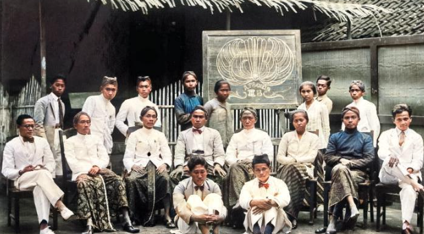

<section id="tentang" style="padding: 40px; background-color: #f5f5f5;">
  <div style="max-width: 800px; margin: auto;">

    <!-- Gambar dan judul besar tetap rata tengah -->
    <div style="text-align: center;">
      
      <h2 style="color: #2c3e50;">PERGURUAN TAMANSISWA</h2>
    </div>

    <!-- Paragraf dan subjudul rata kiri -->
    <p style="text-align: justify;">
      Perguruan Taman Siswa adalah sebuah lembaga pendidikan nasional yang didirikan di Indonesia oleh Ki Hadjar Dewantara pada tanggal 3 Juli 1922 di Yogyakarta. 
      Lembaga ini berdiri sebagai bentuk perlawanan terhadap sistem pendidikan kolonial Belanda yang diskriminatif pada masa itu, 
      yang hanya memberikan akses pendidikan kepada kaum elit dan orang Belanda.
    </p>

    <h3 style="margin-top: 30px; color: #2c3e50;">Tujuan dan Filosofi Taman Siswa</h3>
    <p style="text-align: justify;">
      Taman Siswa dibangun atas dasar semangat kebangsaan, kemerdekaan berpikir, dan pendidikan untuk semua kalangan. 
      Terdapat tiga semboyan terkenal dari Taman Siswa yang masih relevan hingga sekarang, yaitu:
    </p>
    <ul style="text-align: left;">
      <li><em>Ing ngarso sung tulodo</em> – di depan memberi teladan</li>
      <li><em>Ing madyo mangun karso</em> – di tengah membangun semangat</li>
      <li><em>Tut wuri handayani</em> – di belakang memberi dorongan</li>
    </ul>
    <p>
      Semboyan ketiga ini, "<strong>Tut Wuri Handayani</strong>", kini menjadi semboyan Kementerian Pendidikan Indonesia.
    </p>

    <h3 style="margin-top: 30px; color: #2c3e50;">Ciri Khas Pendidikan Taman Siswa</h3>
    <ul style="text-align: left;">
      <li>Mengutamakan pendidikan karakter dan kebudayaan.</li>
      <li>Mengedepankan kebebasan dalam belajar.</li>
      <li>Menolak pendidikan yang otoriter dan diskriminatif.</li>
      <li>Memadukan nilai-nilai kebudayaan Indonesia dengan pendidikan modern.</li>
    </ul>

    <h3 style="margin-top: 30px; color: #2c3e50;">Peran dalam Sejarah</h3>
    <p style="text-align: justify;">
      Taman Siswa punya peran besar dalam membangkitkan semangat nasionalisme dan kesadaran akan pentingnya pendidikan di kalangan pribumi. 
      Ki Hadjar Dewantara, sebagai pendirinya, kemudian diangkat sebagai Bapak Pendidikan Nasional Indonesia.
    </p>
  </div>
</section>
